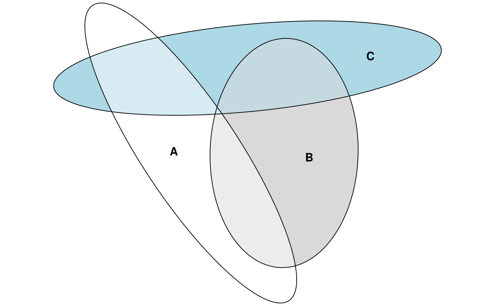
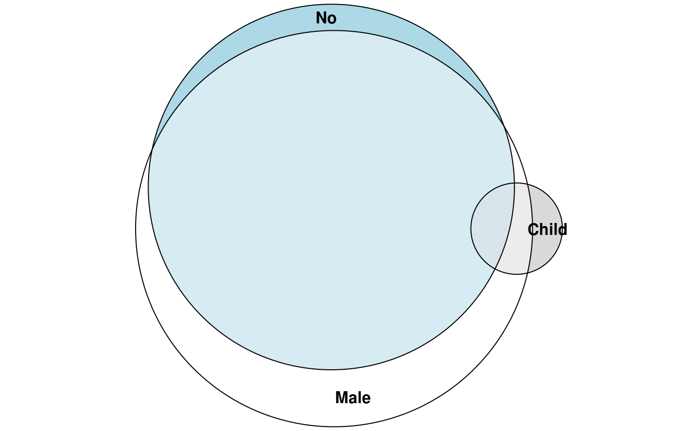

Fit Euler diagrams (a generalization of Venn diagrams) using numerical optimization to find exact or approximate solutions to a specification of set relationships. The shape of the diagram may be a circle or an ellipse.
euler(combinations, ...) # S3 method for default euler(combinations, input = c("disjoint", "union"), shape = c("circle", "ellipse"), control = list(), ...) # S3 method for data.frame euler(combinations, weights = NULL, by = NULL, ...) # S3 method for matrix euler(combinations, ...) # S3 method for table euler(combinations, ...) # S3 method for list euler(combinations, ...)
| combinations | set relationships as a named numeric vector, matrix, or data.frame (see methods (by class)) |
|---|---|
| ... | arguments passed down to other methods |
| input | type of input: disjoint identities
( |
| shape | geometric shape used in the diagram |
| control | a list of control parameters.
|
| weights | a numeric vector of weights of the same length as
the number of rows in |
| by | a factor or character matrix to be used in |
A list object of class 'euler' with the following parameters.
a matrix of h and k (x and y-coordinates for the
centers of the shapes), semiaxes a and b, and rotation angle phi
set relationships in the input
set relationships in the solution
residuals
the difference in percentage points between each disjoint subset in the input and the respective area in the output
the largest regionError
normalized residual sums of squares
If the input is a matrix or data frame and argument by is specified,
the function returns a list of euler diagrams.
The function minimizes the stress statistic from venneuler,
$$ \frac{ \sum_{i=1}^{n} (y_i - \hat{y}_i) ^ 2}{\sum_{i=1}^{n} y_i ^ 2}, $$
where \(\hat{y}\) are ordinary least squares estimates from the regression of the fitted areas on the original areas that are currently being explored. The stress statistic can also be used as a goodness of fit measure.
euler() also returns diagError and regionError from
eulerAPE. regionError is computed as
$$ \left| \frac{y_i}{\sum y_i} - \frac{\hat{y}_i}{\sum \hat{y}_i}\right|. $$
diagError is simply the maximum of regionError.
default: a named numeric vector, with
combinations separated by an ampersand, for instance A&B = 10.
Missing combinations are treated as being 0.
data.frame: a data.frame of logicals, two-level factors (see examples).
matrix: a matrix that can be converted to a data.frame of logicals
(as in the description above) via base::as.data.frame.matrix().
table: A table with max(dim(x)) < 3.
list: a list of vectors, each vector giving the contents of
that set (with no duplicates). Vectors in the list do not need to be named.
Wilkinson L. Exact and Approximate Area-Proportional Circular Venn and Euler Diagrams. IEEE Transactions on Visualization and Computer Graphics (Internet). 2012 Feb (cited 2016 Apr 9);18(2):321-31. Available from: http://doi.org/10.1109/TVCG.2011.56
Micallef L, Rodgers P. eulerAPE: Drawing Area-Proportional 3-Venn Diagrams Using Ellipses. PLOS ONE (Internet). 2014 Jul (cited 2016 Dec 10);9(7):e101717. Available from: http://dx.doi.org/10.1371/journal.pone.0101717
# Fit a diagram with circles combo <- c(A = 2, B = 2, C = 2, "A&B" = 1, "A&C" = 1, "B&C" = 1) fit1 <- euler(combo) # Investigate the fit fit1#> original fitted residuals regionError #> A 2 2.300 -0.300 0.021 #> B 2 2.300 -0.300 0.021 #> C 2 2.300 -0.300 0.021 #> A&B 1 0.670 0.330 0.040 #> A&C 1 0.670 0.330 0.040 #> B&C 1 0.670 0.330 0.040 #> A&B&C 0 0.547 -0.547 0.058 #> #> diagError: 0.058 #> stress: 0.049# Refit using ellipses instead fit2 <- euler(combo, shape = "ellipse") # Investigate the fit again (which is now exact) fit2#> original fitted residuals regionError #> A 2 1.687 0.313 0 #> B 2 1.687 0.313 0 #> C 2 1.687 0.313 0 #> A&B 1 0.843 0.157 0 #> A&C 1 0.843 0.157 0 #> B&C 1 0.843 0.157 0 #> A&B&C 0 0.000 0.000 0 #> #> diagError: 0 #> stress: 0# Plot it plot(fit2)# A set with no perfect solution euler(c("a" = 3491, "b" = 3409, "c" = 3503, "a&b" = 120, "a&c" = 114, "b&c" = 132, "a&b&c" = 50))#> original fitted residuals regionError #> a 3491 3445.357 45.643 0.001 #> b 3409 3364.429 44.571 0.001 #> c 3503 3457.198 45.802 0.002 #> a&b 120 118.419 1.581 0.000 #> a&c 114 112.510 1.490 0.000 #> b&c 132 130.274 1.726 0.000 #> a&b&c 50 0.000 50.000 0.005 #> #> diagError: 0.005 #> stress: 0# Using grouping via the 'by' argument through the data.frame method dat <- data.frame( A = sample(c(TRUE, FALSE), size = 100, replace = TRUE), B = sample(c(TRUE, TRUE, FALSE), size = 100, replace = TRUE), gender = sample(c("Men", "Women"), size = 100, replace = TRUE), nation = sample(c("Sweden", "Denmark"), size = 100, replace = TRUE) ) euler(dat, by = list(gender, nation))#> Women.Denmark #> original fitted residuals regionError #> A 10 10 0 0 #> B 8 8 0 0 #> A&B 7 7 0 0 #> #> diagError: 0 #> stress: 0 #> ------------------------------------------------------------ #> Women.Sweden #> original fitted residuals regionError #> A 5 5 0 0 #> B 8 8 0 0 #> A&B 8 8 0 0 #> #> diagError: 0 #> stress: 0 #> ------------------------------------------------------------ #> Men.Sweden #> original fitted residuals regionError #> A 4 4 0 0 #> B 4 4 0 0 #> A&B 8 8 0 0 #> #> diagError: 0 #> stress: 0 #> ------------------------------------------------------------ #> Men.Denmark #> original fitted residuals regionError #> A 2 2 0 0 #> B 10 10 0 0 #> A&B 4 4 0 0 #> #> diagError: 0 #> stress: 0dat2 <- data.frame(A = c(TRUE, FALSE, TRUE, TRUE), B = c(FALSE, TRUE, TRUE, FALSE)) euler(dat2, weights = c(3, 2, 1, 1))#> original fitted residuals regionError #> A 4 4 0 0 #> B 2 2 0 0 #> A&B 1 1 0 0 #> #> diagError: 0 #> stress: 0# Using the matrix method mat <- cbind(A = sample(c(TRUE, TRUE, FALSE), size = 50, replace = TRUE), B = sample(c(TRUE, FALSE), size = 50, replace = TRUE)) euler(mat)#> original fitted residuals regionError #> A 17 17 0 0 #> B 10 10 0 0 #> A&B 19 19 0 0 #> #> diagError: 0 #> stress: 0# The table method plot(euler(as.table(apply(Titanic, 2:4, sum))))# A euler diagram from a list of sample spaces (the list method) euler(list(A = c("a", "ab", "ac", "abc"), B = c("b", "ab", "bc", "abc"), C = c("c", "ac", "bc", "abc")))#> original fitted residuals regionError #> A 1 1.343 -0.343 0.040 #> B 1 1.343 -0.343 0.040 #> C 1 1.343 -0.343 0.040 #> A&B 1 0.640 0.360 0.056 #> A&C 1 0.640 0.360 0.056 #> B&C 1 0.640 0.360 0.056 #> A&B&C 1 1.398 -0.398 0.047 #> #> diagError: 0.056 #> stress: 0.103